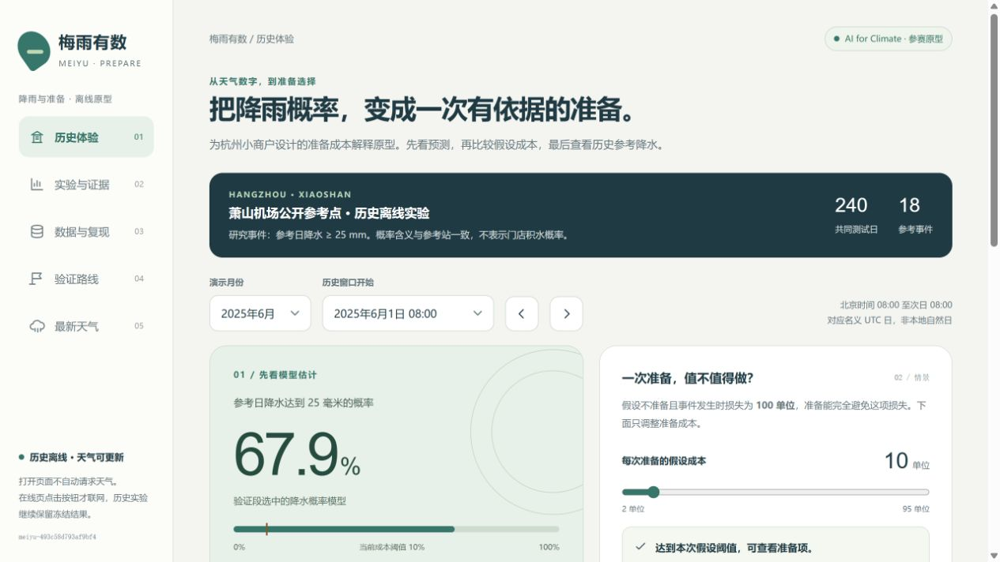

面向杭州需要提前整理易受潮货物的小商户，项目探索如何把降雨参考概率与准备成本解释清楚，让每个判断都能追溯到数据和限制。公开市场监测记载梅雨对部分商品品质、采摘和储运的影响[1]；商户是否需要、愿意使用或付费，仍待实际访谈。
气候价值定位于适应与准备。两年资料不能用于归因气候变化或推断长期趋势，机场降雨也不等于门店积水。
| 主实验配对日 | 共同测试日 | 测试参考事件 |
|---|---|---|
| 636 | 240 | 18 |

实际历史演示：选择窗口、查看概率、比较假设成本，再揭晓参考降水。AI任务是把公开数值预报输入映射为名义UTC日参考降水达到25毫米的概率。25毫米是研究阈值，不是官方预警等级。采用小型逻辑回归，参数仅在验证段选择；语言模型不生成气象观测或预测标签。
| 分区 | 用途 | 日数 / 事件 |
|---|---|---|
| 2024年 | 填充、标准化和拟合 | 276 / 16 |
| 2025年1月至4月 | 选择C与模型 | 120 / 3 |
| 2025年5月至12月 | 测试，不调参 | 240 / 18 |
| 概率方法 | 测试Brier | 状态 |
|---|---|---|
| 训练期固定事件率 | 0.0697 | 全训练期基线 |
| 降水概率模型 | 0.0455 | 验证选中 |
| 降水与温湿度模型 | 0.0444 | 完整对照，未选中 |
| 测试期判断 | 命中 | 漏报 | 误报 | 正确排除 |
|---|---|---|---|---|
| 原始25毫米规则 | 7 | 11 | 4 | 218 |
| 模型，固定10%阈值 | 12 | 6 | 9 | 213 |
少漏报伴随更多误报，这不是等误报率比较。成本由准备成本与损失的假设比例决定，准备完全避损也是假设，不能解释为真实人民币收益。
完整Python应用有六页：最新天气、历史演示、方法比较、数据核查、样本浏览、模型接入。免安装HTML有五个导航入口，涵盖历史体验、实验与证据、数据与复现、验证路线和最新天气。两者读取同一份冻结实验结果。
最新天气仅在用户点击后联网。杭州和宁波分别展示未来七个完整UTC日的数值预报、本年度ERA5天气背景、SSOD站点参考覆盖，并提供完整度日历、来源及获取时间。更新失败保留旧缓存，过期状态明确展示。
| 来源 / 检查 | 已获得的证据 | 不能推导的结论 |
|---|---|---|
| 主实验2024至2025 | 731配置日，670完整参考日，636配对日 | 缺测不代表无雨 |
| 2026年1月至9月 | 85/273日配对，1个参考事件 | 4月至9月无完整参考，不能验证梅雨 |
| 宁波2025年 | 362行降水参考全缺，零配对 | 无跨城迁移效果 |
| ERA5背景 | 按来源展示历史天气背景 | 不能代替站点标签或补齐评测 |
| 最新数值预报 | 保留实际获取时刻和小时完整度 | 不直接套用冻结历史概率模型 |
主参考来自萧山机场SSOD名义UTC日，可能低报，名义日界不代表每条记录的精确累计边界[2]。Previous Runs日聚合可能来自多个初始化，尚未核实整组信息在某一历史决策时刻已经公开可用[3]。因此不声称提前24小时业务预警。
主实验排除61个无完整参考日及另外34个无完整配对预报日，不补零。所有来源、质量说明和摘要可追溯；数据版本为meiyu-493c58d793af9bf4。冻结预测的5月至7月子集有90日、16事件，模型Brier为0.1038；这是固定月份补充描述，不等于官方梅雨期，也不是新的盲测。| 阶段 | 计划工作 | 验收依据 |
|---|---|---|
| 第1至2周 | 确认用户假设，拟招募5至8位自愿参与者 | 真实需求与参与意愿 |
| 第3至4周 | 固定历史情景下的理解和操作测试 | 能否解释概率、日界、非积水含义 |
| 第5至8周 | 核实单次预报可用时间，影子运行 | 决策前取得数据；缺失时停止判断 |
| 第9至12周 | 复查误解和失败，第二轮理解测试 | 是否继续、修改或收缩 |
拟定目标为至少80%的参与者在3分钟内完成关键操作，并正确说明“低概率不等于安全”“降雨不等于积水”“成本是假设”。这些是探索性目标，不是既有结果。该90天不覆盖下一轮完整梅雨期，新梅雨表现需另做独立季节验证。
主要投入是数据维护、公开接口调用、托管与测试时间。未来分别测量运行成本、用户理解和采用意愿；目前没有真实付费、收益或灾损减少证据。方法未胜过合理基线时，保留基线并调整AI必要性的表述。
成员姓名与单位：________________；分工：________________。负责人及邮箱：________________。公开演示或仓库网址：________________。
Codex辅助检索、编程、测试和材料整理。核心学习模型在本地运行；影片含程序生成动画、Microsoft Huihui Desktop合成旁白和原创程序配乐。详见随附数据与AI使用说明。所有最终声明由团队核对。